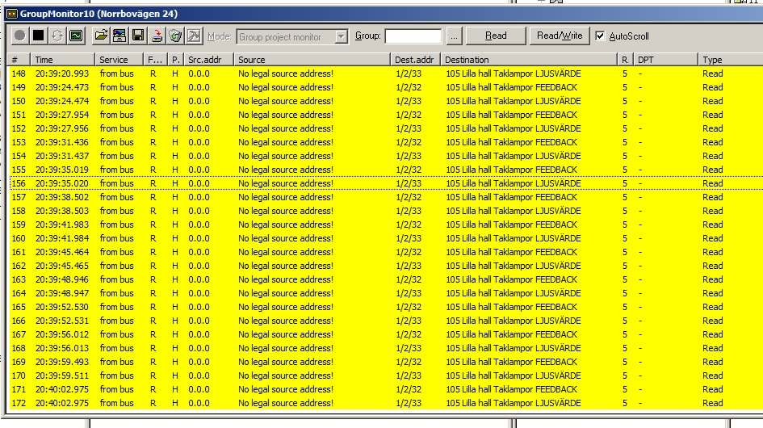

|
This page last changed on Jan 25, 2013 by mickeliten.
Hello!
I have a problem that I don't have any idea how to solve.
I'm new to OpenRemote and I have done my first little test design with three of my switches
at home.
The switches work perfectly on my Samsung TAB, but in the Bus monitor window in ETS3 there
are continuous "spamming" which I don't know what it is and why?
See my picture. It says 'No legal source address!'
It doesn't affect the function in my system but I believe it is unnecessary traffic on the bus.
Does anyone have any ideas? 
Regards,
Mikael.
The topic 'LJUSVÄRDE' in the picture is swedish and means Light value.

|
and you do not have this spam when you disconnect openremote from the knx network?
it seems that something is trying to read a value from the bus, but can't. also it could be openremote, since openremote does not have a bus adress from itself, it uses the ip-knx intefaces adress, did you set this? (i forgot first time)

Posted by tomtenberge at Jan 29, 2013 13:45
|
|
Which OpenRemote version are you using?
The 2.0.1 should not have this behaviour anymore.
Posted by mredeker at Jan 29, 2013 21:57
|
|
Hi, and thank you guys.
I'm using version 2.0.1.
Yes it stops when I close OpenRemote,
and the IP router has its own address 15.15.1.
But I think I have solved the problem.
If I remember right I had some group addresses that had only Feedback objects in them
and they wasn't connected to any actuator output so I had to do some adjustments in ETS,
so I guess its my fault after all. 
The spamming has stopped now, but when I push a button on my pad it appears as a post in the telegram
monitor as a usual telegram but also one yellow post. I don't know whats wrong but it doesn't disturb me
anymore since it doesn't continue spamming.
Posted by mickeliten at Jan 30, 2013 18:06
|
|
Glad to hear you got it solved, and thanks for diving deep into KNX to debug it.
Posted by juha at Jan 31, 2013 10:15
|
|
{kind=link}